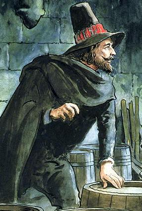

Guy Fawkes /ˈɡaɪ ˈfɔːks/ (York, 13 de abril de 1570 — Londres, 31 de janeiro de 1606), também conhecido como Guido Fawkes, nome adotado enquanto lutava na Espanha, foi um soldado inglês católico que teve participação na "Conspiração da Pólvora" (Gunpowder Plot) na qual se pretendia assassinar o rei protestante Jaime I da Inglaterra e os membros do Parlamento inglês durante uma sessão em 1605, para assim dar início a um levante católico. Guy Fawkes era o responsável por guardar os barris de pólvora que seriam utilizados para explodir o Parlamento durante a sessão. Guy nasceu e se criou em York. Seu pai faleceu quando Guy tinha apenas 8 anos de idade. Sua mãe veio a se casar com um católico adepto da "recusancy". Guy se converteu ao catolicismo e saiu do continente, onde lutou na Guerra dos Oitenta Anos do lado da Espanha católica contra os holandeses protestantes. Viajou pela Espanha em busca de apoio para um levante católico na Inglaterra, mas sem sucesso. Posteriormente, ele viria a conhecer Robert Wintour e Thomas Wintour, que também se envolveriam com a Conspiração da Pólvora. Wintour apresentou Guy a Robert Catesby, que planejou o assassinato do rei Jaime I para colocar um monarca católico no trono. Os conspiradores alugaram um espaço sob a Câmara dos Lordes, onde Guy guardou vários barris de pólvora. Recebendo uma denúncia anônima através de uma carta, as autoridades do Palácio de Westminster encontraram Guy Fawkes e a pólvora logo nas primeiras horas da manhã de 5 de novembro. Nos dias seguintes, ele seria torturado e interrogado, onde confessou sua participação na conspiração. Logo depois, em 31 de janeiro, Guy foi enforcado e em seguida mutilado. Outros participantes da conspiração acabaram tendo o mesmo destino. Guy Fawkes se tornou o símbolo da Conspiração da Pólvora, data que vem sendo comemorada em 5 de novembro desde sua execução
Guy Fawkes nasceu em 1570 em Stonegate, York. Era o segundo entre os quatro filhos de Edward Fawkes, inspetor e defensor público da corte, e sua esposa, Edith.[2] O casal era uma figura proeminente na Igreja da Inglaterra, assim como os avós paternos de Guy. Sua avó, Ellen Harrington, era filha de um importante comerciante que serviu ao prefeito de York em 1536. A família de sua mãe era de católicos do movimento "recusancy" e seu primo Richard Cowling, chegou a tornar-se padre jesuíta. Guy era um nome incomum para a Inglaterra, mas era popular na região de York devido a um nobre local chamado Sir Guy Fairfax de Steeton.[1][2] A data exata do nascimento de Guy é desconhecida. Sabe-se que ele foi batizado na igreja de St Michael le Belfrey em 16 de abril de 1570. Como o período entre o nascimento e o batismo costuma ser de três dias, pode-se presumir que ele tenha nascido em 13 de abril. Em 1568, Edith deu à luz uma menina, chamada Anne, mas o bebê morreu depois de dois meses, em novembro do mesmo ano. Ela teve ainda mais dois filhos depois de Guy, Anne (1572) e Elizabeth (1575). As duas se casaram em 1599 e 1594 respectivamente.[1][3] Em 1579, quando Guy tinha apenas 8 anos, seu pai morreu. Sua mãe viria a se casar vários anos depois com Dionis Baynbrigge (ou Denis Bainbridge), um católico de Harrogate. Guy se tornaria católico através da influência da família de Baynbrigge e sua recusa a praticar os costumes da Igreja da Inglaterra, além de contatos com diversas famílias católicas da região de York e pelo tempo em que estudou na escola de St. Peter, em York, cujo diretor passou 20 anos na prisão por tendências católicas. Alguns colegas de Guy dos tempos de escola, que foram ordenados padres, se tornariam conspiradores com ele.[1][3] Depois de se formar, Guy entrou para o serviço de Anthony Browne, 1º Visconde de Montagu, porém o visconde não gostou de Guy e acabou dispensando-o pouco tempo depois. Ele seria reempregado por Anthony-Maria Browne, 2º Visconde de Montagu, que sucedeu seu pai, aos 18 anos.[3] Segundo o Índice Genealógico Internacional, Guy teria se casado com Maria Pulleyn (nascida em 1569), em Scotton (subúrbio de Harrogate), em 1590 e teria tido um filho, chamado Thomas, em 6 de fevereiro de 1591.[4] Esta, por sua vez, é uma fonte secundária que não pode ser comprovada por documentos da época
Em outubro de 1591, Guy vendeu sua propriedade em Clifton, em York, herdada de seu pai. Ele então atravessou o canal rumo ao continente para lutar na Guerra dos Oitenta Anos pela Espanha, país católico, contra República das Sete Províncias Unidas dos Países Baixos e de 1595 até o Tratado de Vervins, em 1598, na França. A Inglaterra não tinha tropas em terra contra a Espanha, mas os dois países ainda estavam em guerra (Guerra anglo-espanhola, (1585-1604). Guy se juntou as tropas de Sir William Stanley, lorde católico e comandante veterano que financiou um exército na Irlanda para luta na expedição de Robert Dudley, 1º Conde de Leicester nos Países Baixos. Stanley era estimado por Elizabeth I, mas ao se render em Deventer para as tropas espanholas em 1587, ele e a maior parte de sua tropa mudou de lado para servir à Espanha.[1] Guy se tornou alferes, ou oficial júnior, lutando bem no cerco de Calais de 1596 e em 1603 foi recomendado para um posto de capitão.[5] Naquele ano, ele viajou pela Espanha em busca de auxílio para uma rebelião católica na Inglaterra. Foi por volta desta época que ele adotou a versão italiana de seu nome, Guido, e apesar de ser bem recebido na corte de Filipe III, o rei gentilmente negou qualquer apoio ao levante.
Em 1604, Guy se envolveria com um pequeno grupo de católicos ingleses, liderados por Robert Catesby, que planejava assassinar o rei protestante, Jaime VI e substitui-lo por sua filha, a terceira na linha de sucessão, a princesa Elizabeth.[3] A primeira reunião dos cinco principais conspiradores aconteceu em 20 de maio de 1604, em uma pousada chamada "Duck and Drake". Robert Catesby já havia proposto uma reunião com Robert e Thomas Wintour, sugerindo matar o rei e destruir seu governo, explodindo o prédio do parlamento com pólvora. Wintour inicialmente rejeitou o plano, mas foi convencido por Catesby a viajar até o continente para buscar ajuda para o levante. Foi nessa viagem que Wintour conheceu Guy Fawkes, que estava longe da Inglaterra havia muitos anos, e assim era desconhecido em sua terra natal.[2][3] Em abril de 1604, os dois retornaram ao país.[5] Um dos conspiradores, Thomas Percy, foi promovido em junho de 1604, tendo assim acesso a uma casa em Londres que pertencia a John Whynniard, responsável pelo guarda-roupa do rei. Guy foi contratado como caseiro e passou a usar o pseudônimo de John Johnson. A casa era um local ideal para esconder os 36 barris de pólvora adquiridos pelos conspiradores. A ameaça constante da peste acabou atrasando a abertura do Parlamento para 5 de novembro, uma terça-feira
A Descoberta da Conspiração da Pólvora (c. 1823), Henry Perronet Briggs Alguns conspiradores estavam preocupados com alguns colegas católicos que estariam presentes durante a sessão do Parlamento no dia do atentado. Na tarde de 26 de outubro, Lord William Monteagle, 4º Barão de Monteagle, recebeu uma carta anônima alertando-o para ficar longe do prédio do parlamento.[3] O barão provavelmente achou que eram boatos e os conspiradores continuaram com seus planos. Guy verificou o galpão embaixo do parlamento em 30 de outubro e reportou que nada havia sido mexido.[2][3] As suspeitas de Lorde Monteagle, porém, cresceram e ele acabou mostrando a carta ao rei Jaime I. O rei ordenou que Sir Thomas Knyvet conduzisse uma busca pelo parlamento, inclusive nos porões, o que ele fez nas primeiras horas da madrugada de 5 de novembro. Guy trocou de guarda com Percy na noite anterior e foi encontrado deixando o galpão, pouco depois da meia-noite e foi preso. Os barris de pólvora foram encontrados sob pilhas de lenha e carvão.[1][3][6]
Guy deu aos interrogadores seu pseudônimo de John Johnson quando foi interrogado pela primeira vez na sala privativa do rei, onde ainda estava confiante.[6] Ele se identificou como sendo um homem de 36 anos, católico de Netherdale e deu o nome de seu pai como sendo Thomas e sua mãe sendo Edith Jackson. Em algum momento, Guy Fawkes admitiu que sua intenção era em explodir o Parlamento e estava triste por não ter conseguido. Sua maneira firme de falar lhe valeu a admiração do rei James.[6] A admiração, por sua vez, não impediu o rei de mandar torturar "John Johnson" para que ele revelasse os nomes dos outros conspiradores. As torturas começaram "leves" no início, mas as mais severas começaram a ser aplicadas quando ele foi transferido para a Torre de Londres. O rei compôs uma lista de perguntas para que "Johnson" respondesse.
Sir William Waad, tenente da torre, acabou por obter a confissão de Guy. Ele acabou revelando sua verdadeira identidade em 7 de novembro e revelou aos interrogadores que existiam cinco pessoas envolvidas na conspiração contra o rei. Ele então revelou os nomes, em 8 de novembro, contando que a intenção era colocar a princesa Elizabeth no trono. Em sua terceira confissão, em 9 de novembro, ele implicou Francis Tresham. Fawkes assinou sua confissão logo em seguida.[5][6]
Assinatura de Fawkes como "Guido", logo após a tortura, comparada com uma assinatura anterior.
Julgamento e execução
O julgamento dos oito conspiradores começou na segunda-feira, 27 de janeiro de 1606.[6] O resultado não foi surpresa para ninguém. O juri considerou todos os oito conspiradores culpados por alta traição. O procurador geral da Inglaterra Sir Edward Coke proferiu a sentença: todos seriam estripados, seus genitais deveriam ser removidos e queimados na sua frente, seu coração deveria ser arrancado e depois deveriam ser decapitados e seus corpos desmembrados para que as partes fossem levadas em todos os quatro cantos do reino para servir de aviso aos traidores.[3][5][6]
Em 31 de janeiro de 1606, os condenados foram levados para o palanque, onde seriam executados. Enfraquecido pela tortura, pedindo perdão ao rei e à nação, Guy conseguiu se soltar e pulou para a morte, quebrando o pescoço em seguida, a fim de evitar a humilhação da execução. Seu corpo foi desmembrado mesmo assim e as partes foram levadas para vários lugares do reino.[7]
Ainda nos dias de hoje o rei ou rainha vai até o parlamento apenas uma vez ao ano para uma sessão especial, sendo mantida a tradição de se revistar os subterrâneos do prédio, antes da sessão. Uma tradição sardônica dá a Fawkes o título de ser "o único homem que entrou no parlamento com intenções honestas". Na Inglaterra até hoje existe a tradição de celebrar no dia 5 de novembro a Noite das Fogueiras. Nesta noite bonecos com a imagem de Fawkes são desfilados na rua, agredidos, despedaçados e por fim queimados
Uma rima tradicional foi criada em alusão à Conspiração da Pólvora:
Tradução livre
" Lembrai, lembrai, o cinco de novembro A pólvora, a traição e a conspiração; Não conheço nenhuma razão para que a traição da pólvora; Deva ser esquecida algum dia."Frequentemente Fawkes é referido com o título irônico de ser "o único homem que entrou no parlamento com intenções honestas". Sua imagem acabou se tornando um símbolo de rebelião e até da anarquia. A graphic novel V de Vingança, com roteiro de Alan Moore e arte de David Lloyd, possui influências da "Conspiração da Pólvora". Um personagem que utiliza o codinome V e que utiliza uma máscara inspirada no rosto de Guy Fawkes, tenta promover uma revolução na Inglaterra fictícia (década de 1990) onde é ambientada a graphic novel. A explosão do parlamento inglês também era objetivada, buscando-se concretizar, de certa forma, os planos da conspiração da pólvora. Outra influência é encontrada em pelo menos dois dos livros da saga Harry Potter: em Harry Potter e a Pedra Filosofal, no primeiro capítulo, a história é explicitamente citada quando dois locutores de televisão, ao anunciarem uma chuva de estrelas observada anormalmente no céu, atribuem a sua origem a uma provável comemoração antecipada da Noite das Fogueiras; e em Harry Potter e a Câmara Secreta, no capítulo doze, uma fênix é chamada de Fawkes, tentando traçar um paralelo entre o mito da fênix que, após morrer renasce das suas próprias cinzas, e a necessidade do renascimento social, cultural e político em Inglaterra, concretizável caso a revolução fosse adiante. Na série de manga e Anime "One Piece", existe um personagem cujo nome é Dracule Mihawk, usualmente chamado de "Olhos de falcão". Fica muito claro que este personagem é uma homenagem direta de Eiichiro Oda (o criador da série) ao Guy Fawkes, isso pode ser facilmente explicitado observando-se o nome e a fisionomia do personagem criado pelo Mangaka. No vídeo-jogo Fallout 3, um dos personagens utiliza o nome Fawkes. Quando questionado sobre o porquê da escolha do nome, responde que era o nome de alguém "...que lutou e morreu por aquilo em que acreditava."
Cópia descarada desse artigo